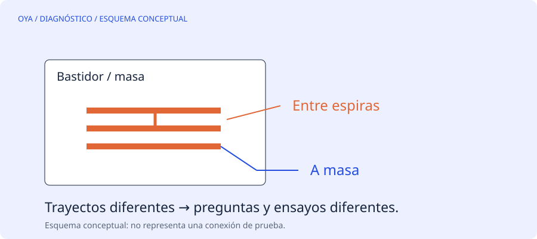

Un buen número puede responder otra pregunta
El ensayo de resistencia de aislamiento observa la corriente de fuga bajo una tensión de prueba definida. Cuando se realiza entre devanado y masa, ayuda a evaluar ese trayecto de aislamiento. No demuestra por sí solo que todas las espiras estén separadas correctamente entre sí.
Dos espiras vecinas pueden tener un defecto local mientras el conjunto sigue muy bien aislado de la carcasa. Si el informe solo dice «aislamiento correcto» sin indicar qué se ensayó, es fácil interpretar una conclusión más amplia que la medida real.
Diferenciar los ensayos
La resistencia óhmica examina la continuidad y resistencia del circuito conductor. La resistencia de aislamiento examina otro comportamiento eléctrico. Los ensayos de comparación por impulsos, cuando resultan adecuados para la máquina y el procedimiento, aportan información diferente sobre el devanado. Ninguno debe aplicarse indiscriminadamente a un equipo desconocido.
| Pregunta | Tipo de información necesaria |
|---|---|
| ¿Hay continuidad? | Medida de circuito conductor |
| ¿Hay fuga al bastidor? | Ensayo de aislamiento apropiado |
| ¿Las fases son comparables? | Medidas comparables y esquema |
| ¿Hay defecto entre espiras? | Evaluación específica del devanado |
La selección de equipo, tensión y criterio de aceptación corresponde a personal competente y a la documentación aplicable. Un artículo no sustituye un procedimiento de laboratorio o de taller.
La temperatura y la humedad importan
La resistencia de aislamiento depende mucho del estado ambiental y térmico. Comparar una lectura fría y seca con otra caliente y húmeda puede ocultar una tendencia real o generar una alarma innecesaria. Por ello el registro debe incluir temperatura y condiciones de prueba.
La tendencia de medidas realizadas con el mismo método puede ser más útil que un número aislado. Aun así, una tendencia estable no autoriza a ignorar olor, disparos, desequilibrio de corriente u otros síntomas nuevos.
Cuidado con lo conectado al motor
Variadores, sensores, electrónica y dispositivos de protección pueden no admitir la tensión de un megóhmetro. Un equipo que parece apagado puede seguir conectado al circuito o conservar energía. La identificación, separación y descarga posterior forman parte de un procedimiento profesional; no se ofrecen aquí instrucciones de conexión de prueba.
No existe un umbral único para todos los motores
El criterio depende de tipo de devanado, tensión nominal, temperatura de referencia, antigüedad y norma empleada. Por eso esta web no presenta una cifra universal de megaohmios como permiso de energización. La documentación del fabricante y el procedimiento técnico tienen prioridad.
Qué debe decir un informe útil
Identifica el motor, los circuitos ensayados, el equipo utilizado, las condiciones, el método y los resultados. Añade el criterio con el que se compararon y las limitaciones de la conclusión. «No se observó anomalía en este ensayo» es distinto de «el motor está libre de cualquier defecto». Esa precisión evita que una reparación se dé por validada únicamente por una lectura favorable.
Fuentes y alcance
Referencia de consulta: EASA/AEMT: guía de reparación y ensayos del motor. Los ejemplos numéricos son educativos y no describen un trabajo realizado.